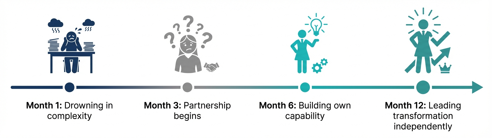

*A 30-day cohort programme for leadership teams*
Start Right 30 takes your leadership team from scattered thinking to strategic clarity in 30 days. Build Steps 1-3 of the O2O Framework together—with facilitation, peer accountability, and a framework that actually works.
Limited to 20 executives per cohort.
Includes Athena V3 Personal for every participant.

Let me describe a pattern I've seen hundreds of times.
A leadership team gets excited about a transformation. There's energy in the room. Everyone agrees something needs to change. Someone books a two-day offsite. Post-its go on walls. Strategy decks get written.
Six months later? Nothing's moved.
Not because people didn't care. Not because the idea was bad. But because nobody took the time to build a real foundation.
Here's what typically goes wrong:
Everyone has opinions, but nobody has structure. The "strategy" is actually a collection of assumptions that haven't been tested.
Leaders think they're agreeing, but they're talking past each other. Different mental models. Different definitions of success.
Without structured accountability, "transformation" stays on the to-do list—behind everything that's urgent today.
The team jumps into execution before the foundation is solid. Three months in, they hit a wall. Back to the drawing board.
A 30-day facilitated programme that takes your leadership team from scattered thinking to strategic clarity.
Start Right 30 isn't another workshop or training session. It's a structured journey that builds the foundation for transformation success.
Tune in your environment before defining solutions.
Before you can transform, you have to understand where you are. Map your current business landscape, surface the constraints nobody talks about, and identify what's actually driving decisions.
What you'll leave with:
Secure your change arena with aligned targets.
Transformation fails when leaders have different destinations in mind. Define what success actually looks like, quantify the outcomes that matter, and build goals everyone can commit to.
What you'll leave with:
Shape your transformation with the why, what, and how.
Strategy isn't a deck. It's a decision framework everyone can apply. Convert context and goals into strategic choices, test your strategy against real constraints, and build the narrative.
What you'll leave with:
Bring it all together and plan what's next.
Integrate Steps 1-3 into a complete foundation, review and strengthen your assessment, and plan your next steps—whether that's Throughput-90 or independent execution.
What you'll leave with:
30-Day Leadership Cohort Programme
Limited to 20 executives per cohort
After Start Right 30, continue to:
Throughput-90: Complete Steps 4-9 →